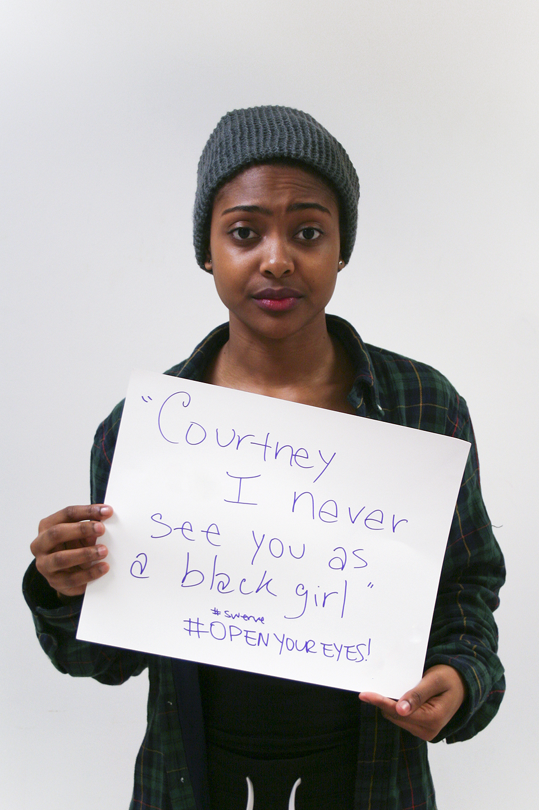
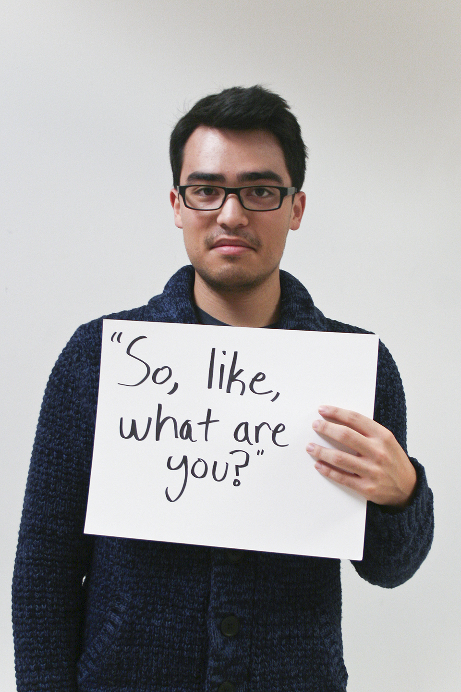
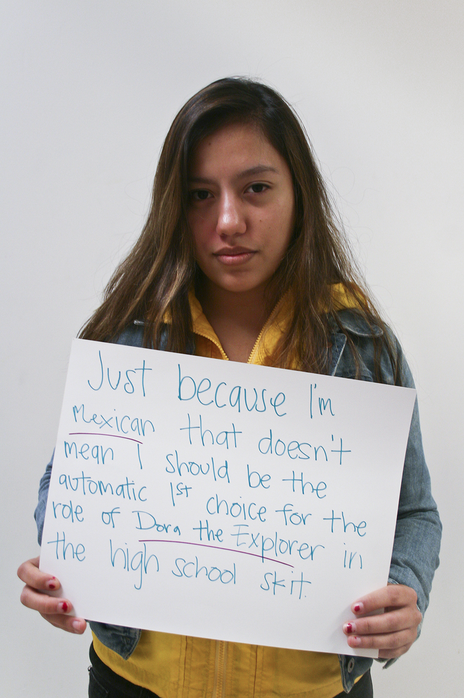
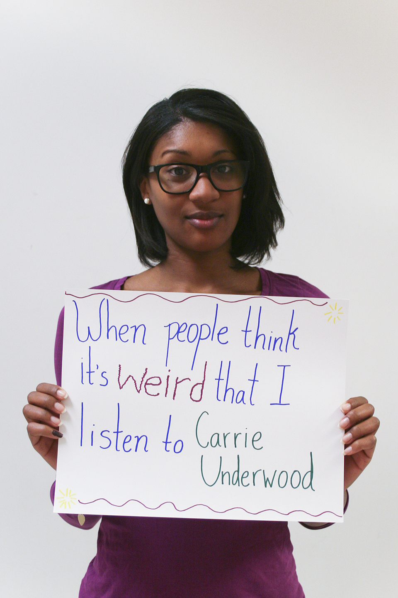

In this series, in each photo a person of color is
holding up a written quote they have heard in the past.
"So what does your hair look like today?"
She said as she pulled off my hat without my permission
"You're not really Asian"
"Can you read this?" HE showed me a Japanese character on his phone.
"Why do you sound white?"
"What are you?" Human. Being biracial doesn't make me a 'what'.

"Courtney I never see you as a black girl" #swerve #openyoureyes!
"You don't act like a normal black person ya know?"

"So, like, what are you?"
"Can you see as much as white people? You know, because of your eyes...?"
Not your fucking "China Doll"
When I gave a speech about racism, the emcee introduced me as "Jaime Garcia."
My name is Jaime Rodriguez, not all Latinos have the last name Garcia.
The limited representation of my race in your classroom
does not make me the voice of all Black People.
This girl sitting next to me moves, to sit closer to someone she's talking to,
and this white guy whispers loudly that she moved because I "smell like rice"

Just because I'm Mexican that doesn't mean I should be the automatic 1st choice
for the role of Dora the Explorer in the high school skit
"No, where are you really from?"
"So what do you guys speak in Japan? Asian??"

When people think it's weird that I listen to Carrie Underwood
"So... you're Chinese... right?"
"You don't speak Spanish?"
"You're really pretty... for a dark skin girl"
The Project
The Racial Microaggressions photo series was created in December 2013.
It was shot at Fordham University at Lincoln Center in New York,
and all subjects in the series are then-students of Fordham University.
Redacted Images: The below images were meant to highlight the erasure of multiracial, white-passing identities. However to avoid miscommunication and confusion, the two photos below have been officially removed from the series. When sharing my images, I ask you omit these photos, as they can be interpreted that white people can face racial microaggresions.
When standing next to my mom:
"Why is your daughter so white?"